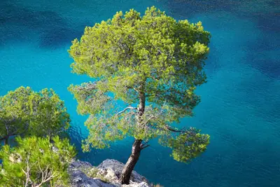

pranet · 出典付きの植物図鑑
アレッポマツ
Pinus halepensis Mill. · Pinaceae

アレッポマツ は、地中海地方に自生するマツの1種である。モロッコ、アルジェリアなど地中海沿岸のマグリブ全域、スペインから北は南フランス、イタリア、クロアチア、東はギリシア、北リビアに分布する。シリア（語源となったアレッポ地方を含む）、ヨルダン、イスラエルでは最も多い樹種の1つである。標高200メートル (m) までの低い土地でよく見られるが、南スペインでは標高1000 mまで、モロッコ、アルジェリアの南部では標高1700 mまで自生している。シリアのアレッポ原産ではないが、18世紀の錯誤が根強く残ったためにこう呼ばれている。
出典: Wikipedia 日本語版「アレッポマツ」 · CC BY-SA 4.0
異名: Pinus abasica hort. ex Carrière, Pinus abchasica hort. ex Carrière, Pinus alepensis Poir., Pinus arabica Sieber ex Spreng., Pinus carica D.Don, Pinus ceciliae Llorens & L.Llorens, Pinus colchica Booth ex Gordon, Pinus genuensis J.Cook, Pinus hierosolimitana Duhamel, Pinus hispanica J.Cook, Pinus loiseleuriana Carrière, Pinus maritima Aiton, Pinus maritima Mill., Pinus paroliniana Webb ex Carrière, Pinus parolinii Vis., Pinus penicillus Lapeyr., Pinus pseudohalepensis Denhardt ex Carrière, Pinus saportae Rouy
同定や利用は自己責任でお願いします。この図鑑だけを根拠に野生の植物を食べないでください。
出典
- 学名: World Flora Online Plant List 2026-06 · CC0 1.0
- 名前: Wikipedia の記事名と Wikidata · CC0 1.0（Wikidata）。記事名は事実
- 説明: Wikipedia 日本語版「アレッポマツ」 · CC BY-SA 4.0
- 食用・毒性: World Checklist of Useful Plant Species (Diazgranados et al. 2020, RBG Kew) · CC BY 4.0
- 分布: World Checklist of Vascular Plants (WCVP), RBG Kew, version 2026-06-04 · CC BY 3.0
このページは pranet のデータから自動生成しています。コードは MIT、データは項目ごとのライセンス（説明）。